Représenter le mouvement
Ingénieurs, philosophes et mages
Sources
-
Mouvements de l’air : Étienne-Jules Marey, photographe des fluides, Georges Didi-Huberman et Laurent Mannoni
-
All Light, Everywhere, Theo Anthony
Plan
-
Étienne-Jules Marey et la méthode graphique
-
Henri Bergson : incertitudes et mouvement
-
Graphique sociotechnique aujourd’hui et demain
-
Conclusion et retour sur le journalisme local
Controverse du tournant du XIXe siècle
Étienne-Jules Marey et Henri Bergson
Étienne-Jules Marey

-
1830-1904
-
Médecin et physiologiste
Exprime les phénomènes les plus variés, transforme d’obscures statistiques en une exposition lumineuse, condense sous le regard et fait embrasser d’un coup d’oeil une quantité énorme de documents
Représenter le mouvement de toute choses
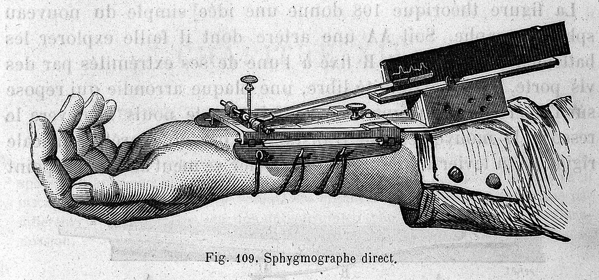
- Chronophotographie
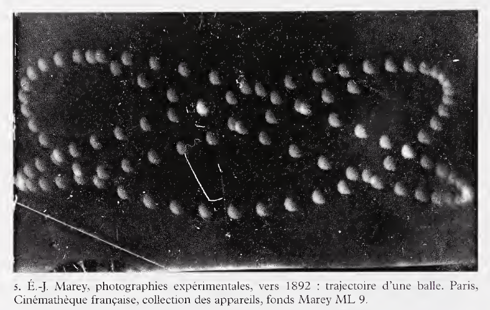


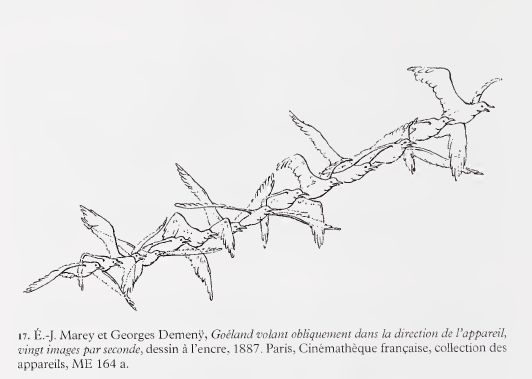
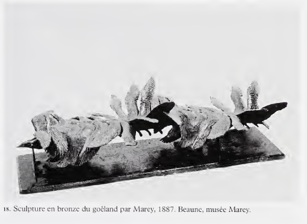
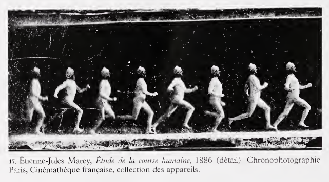
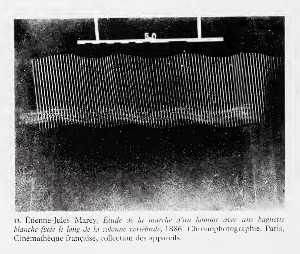
Henri Bergson
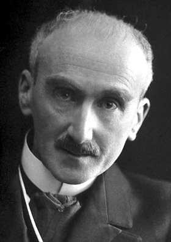
Henri Bergson
- Philosophe de la nouveauté et de la durée
-
Espace et temps
-
Hétérogénéité pure
-
Intuition, connaissance immanente du mouvement
Peut-on découper un mouvement ?
Illusion cinématographique
-
Nie l’essence-même du mouvement, la mobilité
-
L’enveloppe et le papillon
Croisements
Un Marey bergsonnien
-
Image et intuition, concept et système
-
Représenter l’incertitude
-
Traces, nuances et franges indécises
-
Images-experiences (Michel Frizot) -> Image-intuition
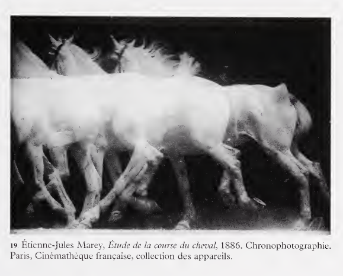
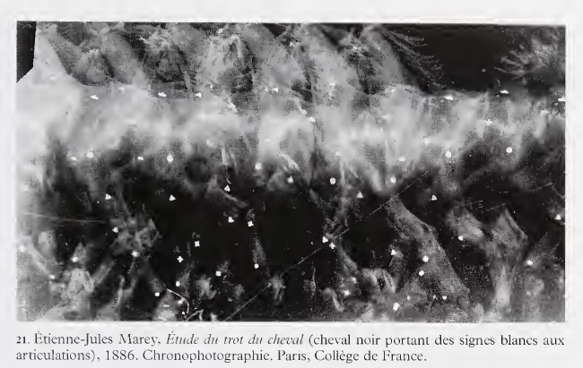
L’art surréaliste
- Écriture automatique
Max Ernst, le nageur aveugle
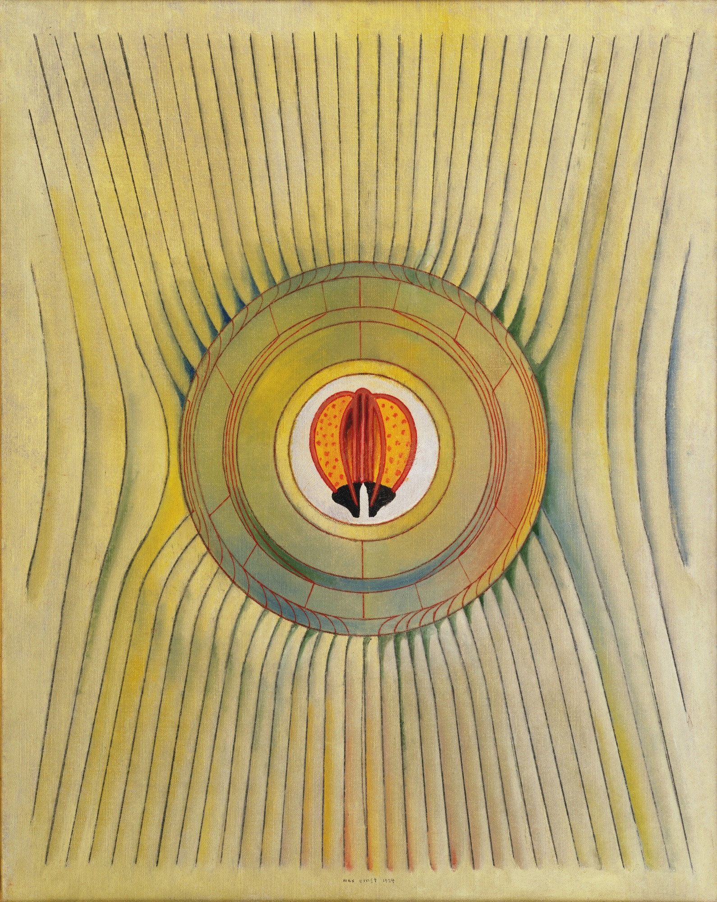
Graphique sociotechnique
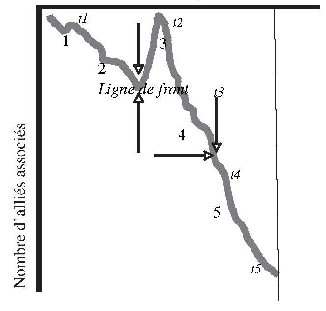
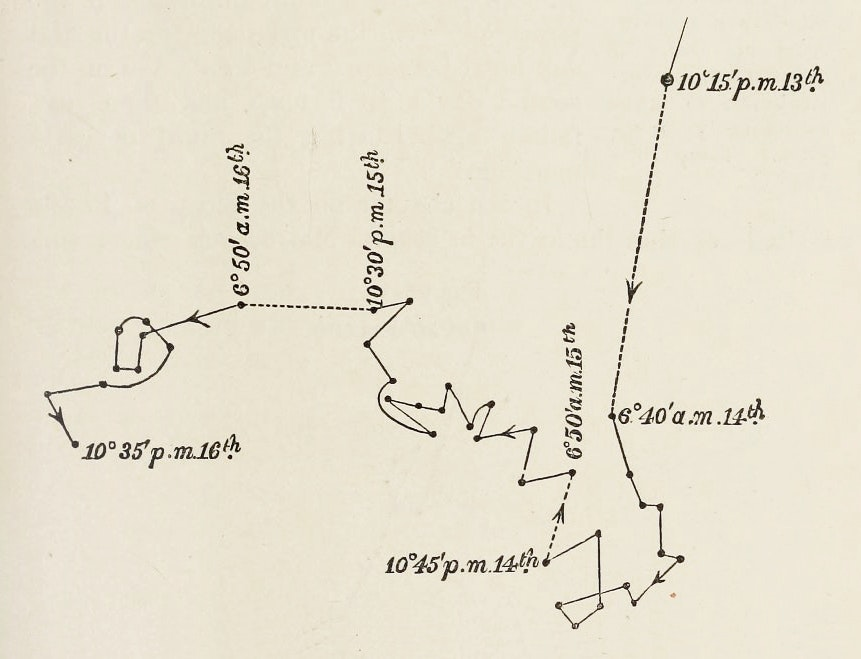
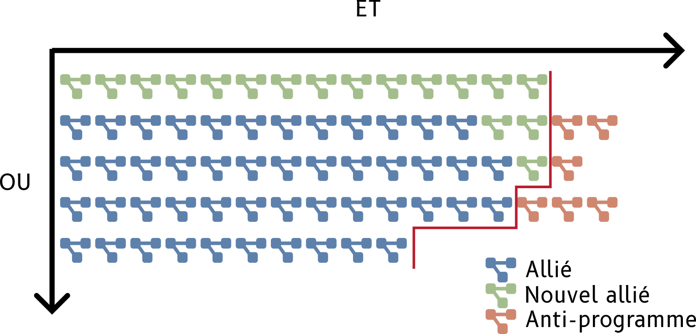
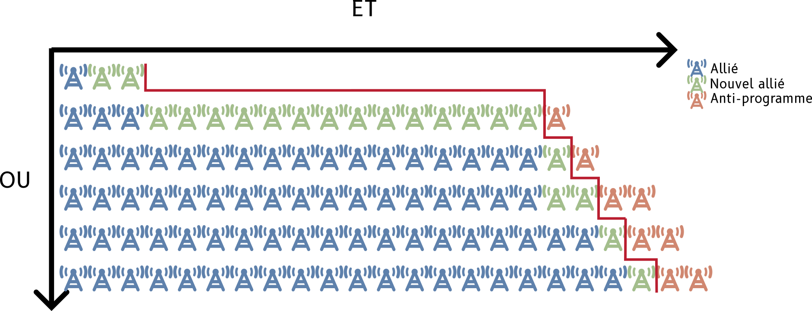
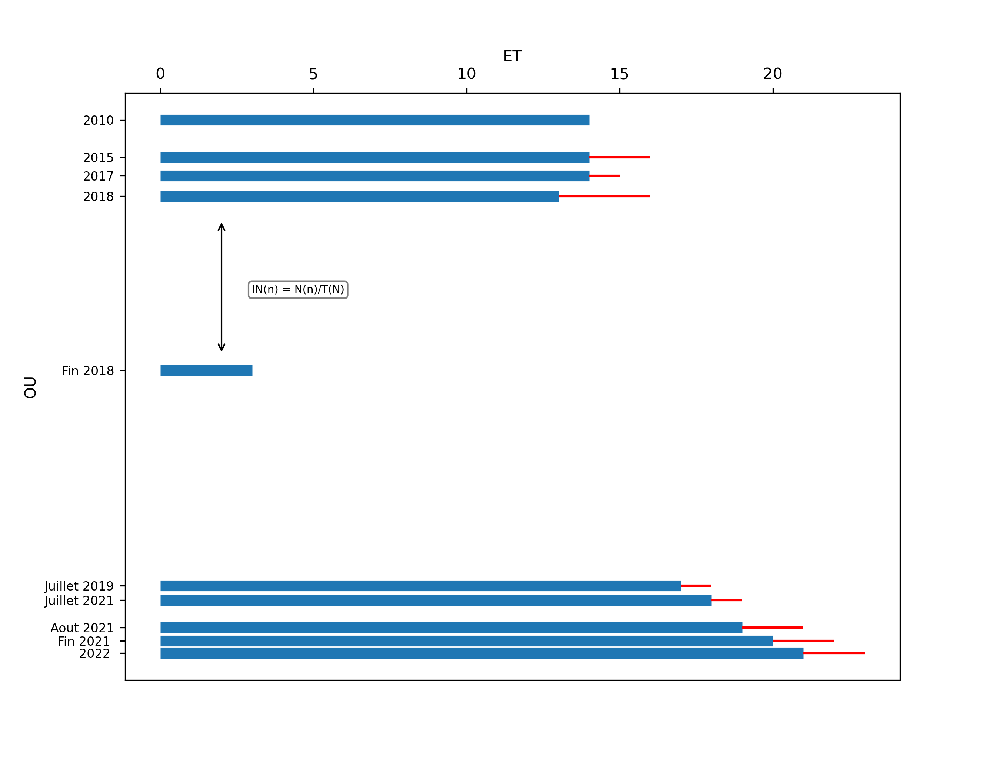
Facilité sa production pour permettre sa vocation comparative
Rendre compte de l’incertitude et de la durée
-
Produire des images expérimentales
-
Étrangeté comme force
Conclusion et retour au journalisme local
Courbe globale, aspect local
Tension traversant l’histoire du journalisme local
- Communautaire ou professionnel ?
- Particulariste ou homogénéisé ?
- Nuances d'un mouvement historique dans la durée pure
Il est de l’essence de l’image de contenir quelque chose d’éternel. Cette éternité s’exprime par la fixité et la stabilité du trait, mais peut aussi s’exprimer, de façon plus subtile, grâce à une intégration dans l’image même de ce qui est fluide et changeant."
Walter Benjamin